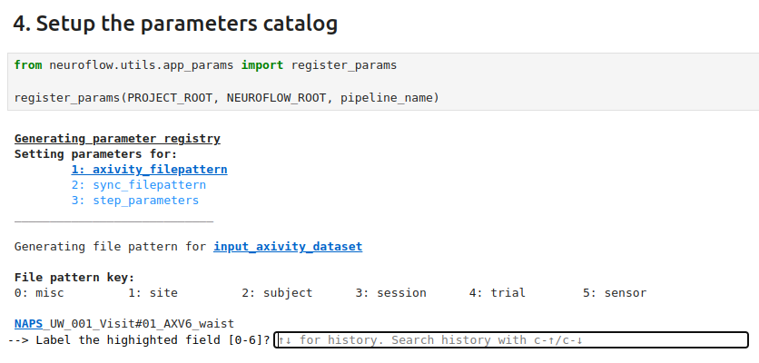
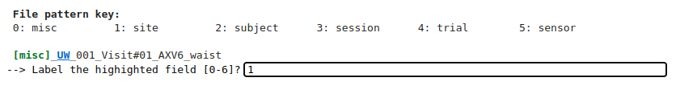
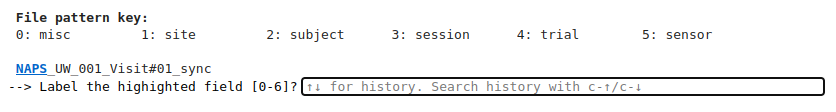
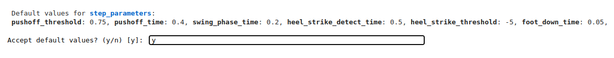

Configuring the Parameter Catalog#
Move onto select the fourth code cell (under 4. Setup the parameters catalog) and run it.
You should see the name of the pipeline you want to set the parameter catalog for, along with each parameter that needs to be set.
In this case, there should be a list of axivity_filepattern, sync_filepattern,
and step_parameters. The current parameter being set (axivity_filepattern) is underlined.

Generating axivity_filepattern#
NeuroFlow now prompts for each element in an example Axivity filename from the Axivity dataset.
Each element must be matched to a value from 0-5 (corresponding to the file pattern key provided).
The current element of the filename being prompted is highlighted in blue and underlined, starting
with NAPS.
| Since NAPS does not correspond to any recognized filepattern element, enter 0 (for miscellaneous) into the prompt:
The next element (UW) is now prompted, which corresponds to the site of the collection, so we can
enter 1 into the prompt:

Moving along the elements in sequence:
001: This is the subject code, so enter 2.
Visit#01: This is the collection session, so enter 3.
AXV6: This is a generic device identifier, so enter 0 since it does not correspond to any key.
waist: This is the worn sensor location, so enter 5.
After entering the last element key, NeuroFlow will move onto setting the next parameter in the list: sync_filepattern.
Generating sync_filepattern#
Similar to above, NeuroFlow prompts for each element in the example sync filename, starting with NAPS.

You can enter the keys into the prompt as follows:
NAPS: Similar to above, this is a miscellaneous key so enter 0.
UW: The collection site, enter 1.
001: This is the subject code, so enter 2.
Visit#01: This is the collection session, so enter 3.
sync: A generic file descriptor, enter 0.
After entering the last key, NeuroFlow will move on to setting the last parameter in the list: step_parameters.
Generating step_parameters#
The last parameter to be set is a set of parameter-value pairs, in this case which define the settings of the step detection algorithm being used (see neuroflow.catalog.parameters package for details):

We’ll be using the default step detection parameter values, so enter y into the prompt to proceed.
You should now see a confirmation of the Parameter Catalog being set in the cell output as follows:
Parameter registration successful.
[03/03/25 01:10:08] INFO Kedro project NeuroFlow __init__.py:144
INFO Defined global variable 'context', 'session', 'catalog' and __init__.py:145
'pipelines'
INFO Registered line magic 'run_viz' __init__.py:151
Updated parameter config files.
With the Data and Parameter Catalogs set, we can proceed to the final step - running the pipeline!